账号安全指南
云平台提供了完备的帐户安全服务，您可以修改密码、设置登录二次认证、查看登录记录，详细安全服务如下：
| 安全类型 | 详细说明 |
|---|---|
| 登录密码 | 建议使用混合大、小写字母、符号及数字的高强度密码，并定期修改密码，以保护帐户安全。 |
| 二次认证 | 除密码之外，设置一个账号登录时需要二次验证的策略，以防密码丢失。 |
| 周期更新密码 | 设置一个周期，当超过这个周期后，控制台密码必须重新设置，才能继续使用。 |
| 登录失败通知 | 启用之后，账号多次尝试登录失败时，会发送通知短信到手机。 |
| 登录失败锁定 | 启用之后，当帐户多次登录失败 ，相同 IP 的终端访问控制台将锁定一段时间。 |
| 禁用会话保持 | 企业之后，系统不记登录状态，当用户上一次操作完成退出浏览器后，需要重新登录。 |
| 同时在线数量 | 设置同时打开控制台的浏览器、终端最大数量。 |
| 账户锁 | 启用后，将限制控制台的操作或者 API 执行写操作。 |
除此之外平台支持查看最近 100 次登录管理控制台的记录，支持查看已授权的第三方应用，已授权的 OAuth 应用。
说明
注册新用户时，系统要求使用强度更高的密码，以降低密码被破解的风险。注册完成后，可以通过邮箱和密码登录控制台。建议用户根据自己的安全需求和使用习惯，在安全中心配置安全策略，强化账号的安全性。
设置入口
点击控制台顶部导航 用户头像 > 账户安全，您也可以点击 这里 进入帐户安全。或者点击产品与服务 > 访问与授权 > 账户安全。
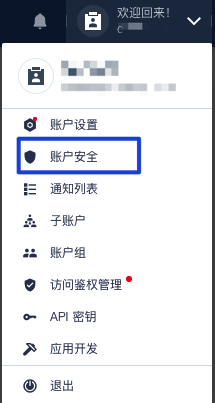
登录密码
云平台对用户账号密码加密保存，同时全站使用 HTTPS 协议提供服务，因此系统保存以及网络中传输的密码有足够的安全性。然而密码本身具有一定的风险性，例如在不安全的计算机登录过系统、误点击进入钓鱼网站，或使用与其他平台相同的账号密码，因该平台被攻击导致明文密码泄露等。
说明
建议使用混合大、小写字母、符号及数字的高强度密码，尽量不要使用与其他平台相同的密码，并定期修改密码，以保护账号安全。
二次认证
除密码外，您可以开启二次认证的功能，以加强账号登录时的身份认证。二次认证采用双因子验证加密技术 ( 2 Factor Authenticaton )，开启该功能后，登录账号时除了验证您的密码，还需要经过动态口令的验证。使用方法如下：
- 在安全中心二次认证功能选项，点击 启用 并确认。
- 在您的手机或其他智能终端安装 Google Authenticator 等支持 2FA 动态口令的应用，可以在 Apple Store、安卓应用市场安装这些应用。
- 在二次认证页面，点击 发送验证码 按钮，向您账号的注册手机发送验证码，输入该验证码并提交。
- 进入您安装的 2FA 应用，通过扫描二维码或手动录入密钥方式，添加到应用中，即可为您的账号生成实时口令。
说明
如果您注册的手机号不是常用号，建议您先更换为常用手机号，以便于接收验证码。
开启了二次认证后，下一次登录该账号时，在输入密码并验证通过后，系统要求您进行动态口令的验证，如下图所示：
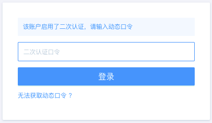
这里动态口令是 6 位的数字，每隔 30 秒刷新一次。可以多人、多终端绑定同一个密钥，以便共同管理账号。如果登录时绑定应用的手机不在身边，或者未通过 2FA 应用绑定密钥，您也可以点击上图的 无法获取动态口令，通过短信验证码的方式登录。
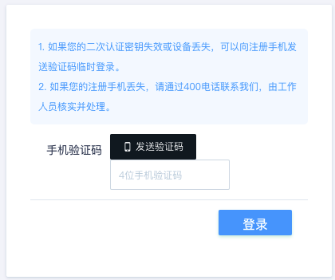
如果您的注册手机遗失，请与工作人员联系，我们在核实身份后对该账号进行处理。
如果您不需要再使用二次认证，或临时需要取消二次认证，您也可以在安全中心将该选项禁用。禁用该选项时，可以选择 “同时使当前密钥失效，再次启用需重新绑定” 的选项。若选择该选项，再次启用二次认证功能时，则当前绑定密钥生成的动态口令将无法用于验证。
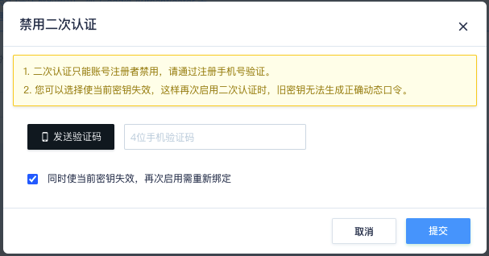
周期更新密码
您可以为您的账号设定“ 1 月”、“ 3 月”和“ 6 月”的周期，例如“ 1 月”。之后当您登录系统时，若距离上次修改密码时间大于 1 个月，页面将强制跳转到密码修改页，完成密码修改您才可以在控制台进行其他管理操作。
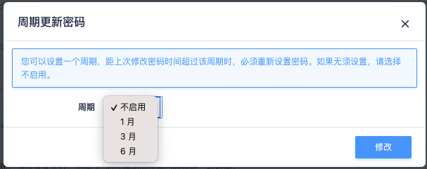
注意
修改密码时新密码不能与现有密码相同。
登录失败通知
如果您希望有人尝试登录您账号时被提醒，可以开启这个选项。开启后，如果您的账户在密码验证或二次认证失败达到 3 次时，会收到来自系统的短信提醒。如果是二次认证多次失败，而且登录者不是您本人或授权使用者，说明您的密码可能已经被窃取，您需要及时修改密码。
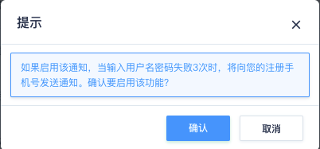
登陆失败锁定
若您选择启用该功能，您的账号在同一终端 6 小时内登录失败 5 次后，该账号在此终端将被锁定登录 24 小时。
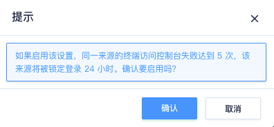
若您的账号被锁定登录，24 小时后将会自动恢复，期间您也可以联系客服帮您清除锁定。但为了您的账户安全，我们不推荐您在未彻查锁定原因前便联系我们解锁。
注意
登录失败判断并非连续。即使 6 小时内您曾经正确登录，我们依然会对既有失败状态累积计数。
禁用会话保持
如果您需要临时使用一台计算机登录系统，或者您的计算机可能被多个人共同操作，可以启用该选项。若启用该选项，在关闭浏览器之后，浏览器不记录您的登录状态。再次打开云平台时，您需要重新登录。如果您经常需要登录系统操作资源，而您使用的是个人工作电脑，为操作方便您可以不必启用该选项。
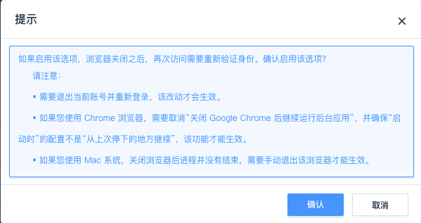
说明
不同的操作系统和浏览器配置，在关闭浏览器窗口时，对进程操作行为不同，您需要在启动该选项时注意一下。
账户锁
当你希望所有资源都进入『只读』状态的话，可以开启『账户锁』。开启的方法是点击控制台顶部导航栏中的『账户锁』，然后输入密码作为解锁密码。 账户锁开启后，对此账户名下所有资源的改动，包括创建、修改、关闭、删除、扩容等，都会被阻止。直到你通过账户锁密码来解锁。
加锁时可选择锁定的场景：
- 控制台：锁定控制台中的操作，如果只选此项，则在控制台中无法修改，但 API 调用不阻止。
- API：锁定 API 对资源做修改。
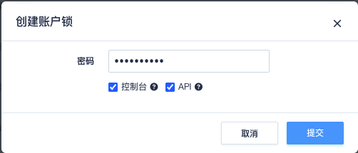
控制同时在线数量
您可以为您的账号设置 10 以内的最大同时在线数量，例如“5”，之后第 6 个浏览器或终端将无法使用您的账号成功登录控制台。若您选择“不启用”，则不会限制您的最大登录数量。
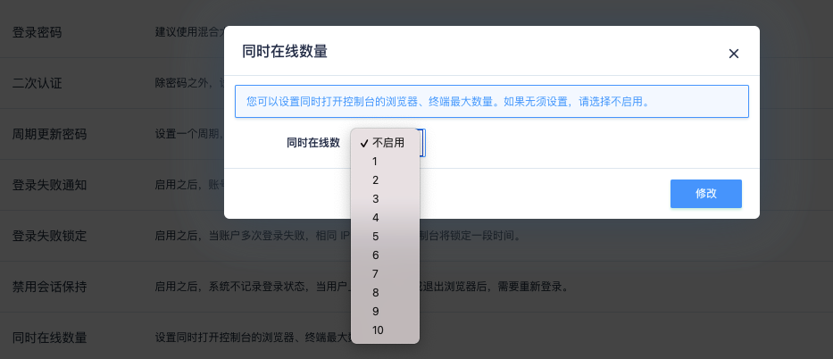
说明
需要释放会话时，您需要手动退出登录，关闭浏览器并不会立即释放会话。
登录历史
用户账号安全中心记录了该账号最近 100 次的登录历史，包括登录时间、登录 IP、登录平台信息。在手机客户端集成该功能后，还会记录登录客户端的设备号。通过历史记录，您可以查询到该账号的登录情况。从 IP、平台等信息，您可以辨别出每次登录的地点和终端是否正常，从而判断该账号有没有授权外的用户登录过。
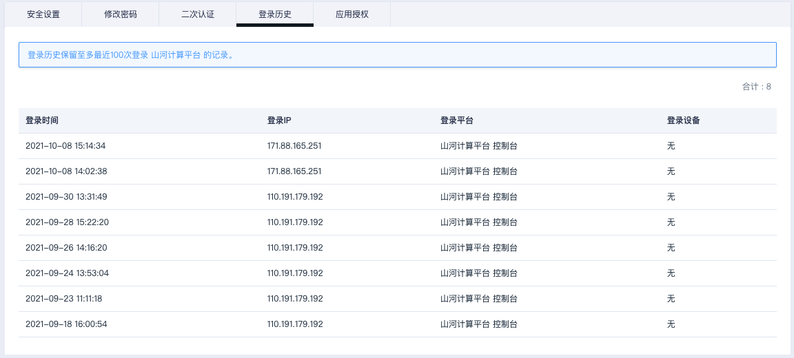